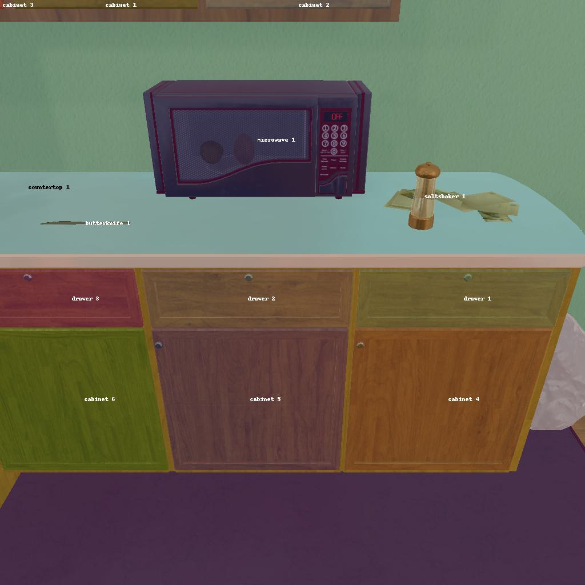

---------------------------------------------------------task: 17---------------------------------------------------------
--------------------------------------------------------------------------------------------------------------------------------------------------------------------
--------------------------------------------------------------------------------------------------------------------------------------------------------------------
Step:--------------------------------------------------------------------------5-------------------------------------------------------------------------------
----------------------------------------
VLM Prompt:
Image1:
Image2:
**Instruction**
1. Analyze the provided image to identify all visible household objects, focusing on those relevant to the task description "cool some pan and put it in stoveburner."
2. Use the analysis of the image and the task hint "The agent must find an object of the desired type, pick it up, go to a fridge, cool the object with the fridge, then find the correct location to place it, and put it down there. The agent does not need to use the fridge button or open the fridge to cool the object, and the agent just needs to do action that is "cool the object with the fridge"." to answer the question: what is the most reasonable action in the choices for the task description "cool some pan and put it in stoveburner"?
4. Decide and write the answer using the template: The answer is: (i): , where i is the real number. If there is no desired object in the image, search every place based on **Initial Observation** to find the object. And if no one is exactly correct, choose a similar answer.
**Initial Observation**
You are in the middle of a room. Looking quickly around you, you can see cabinet (1-14), countertop (1-2), microwave (1), drawer (1-5), sink (1), sinkbasin (1), coffeemachine (1), stoveburner (1-4), toaster (1), fridge (1), diningtable (1), garbagecan (1), safe (1)
**Answer Choices**
(1): go to cabinet 1
(2): go to cabinet 2
(3): go to countertop 1
(4): go to cabinet 5
(5): go to microwave 1
(6): go to cabinet 6
(7): go to drawer 1
(8): go to drawer 2
(9): go to drawer 3
(10): go to cabinet 7
(11): go to cabinet 8
(12): go to sink 1
(13): go to sinkbasin 1
(14): go to coffeemachine 1
(15): go to cabinet 9
(16): go to cabinet 10
(17): go to drawer 4
(18): go to cabinet 11
(19): go to stoveburner 1
(20): go to stoveburner 2
(21): go to stoveburner 3
(22): go to stoveburner 4
(23): go to cabinet 12
(24): go to toaster 1
(25): go to drawer 5
(26): go to countertop 2
(27): go to fridge 1
(28): go to cabinet 13
(29): go to cabinet 14
(30): go to diningtable 1
(31): go to garbagecan 1
(32): go to safe 1
(33): open cabinet 4
(34): close cabinet 4
(35): take saltshaker 1 from cabinet 4
(36): take butterknife 1 from cabinet 4
**Answer**
Let's think step by step by following the instructions.
----------------------------------------
----------------------------------------
Original Response:
First, the task is to "cool some pan and put it in stoveburner." For this task, we need to find a pan. The image provided does not show any pan, so we must search for it based on the initial observation list.
Considering the typical storage places for pans in a household, they are usually found in cabinets or drawers near the stove. Therefore, it's reasonable to check cabinets and drawers first.
From the answer choices given, the options to go to different cabinets and drawers are available. Since we are specifically looking for a pan, we should prioritize checking the cabinets and drawers closest to the stoveburners, as this is the most common storage location for pans.
Based on the initial observation list, we have stoveburners (1-4) mentioned, so the cabinets or drawers near these stoveburners should be the target.
The answer is: (6): go to cabinet 6. This is the closest cabinet to the stoveburners according to the initial observation list, and therefore the most likely place to find a pan for the task.
----------------------------------------
----------------------------------------
>>> Refine Original VLM Response and Get Pure Action: go to cabinet 6
----------------------------------------
-----------------------------------------------------------------
Running time: 9.190533876419067 seconds
Total Money: 8.005190000000002
-----------------------------------------------------------------
-----------------------------------------------------------------
Text Observation:You arrive at loc 7. The cabinet 6 is closed.
-----------------------------------------------------------------
UNSUCCEED